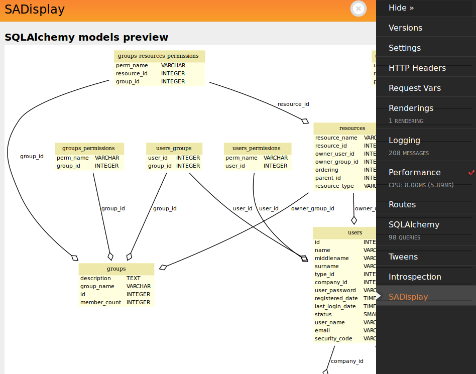
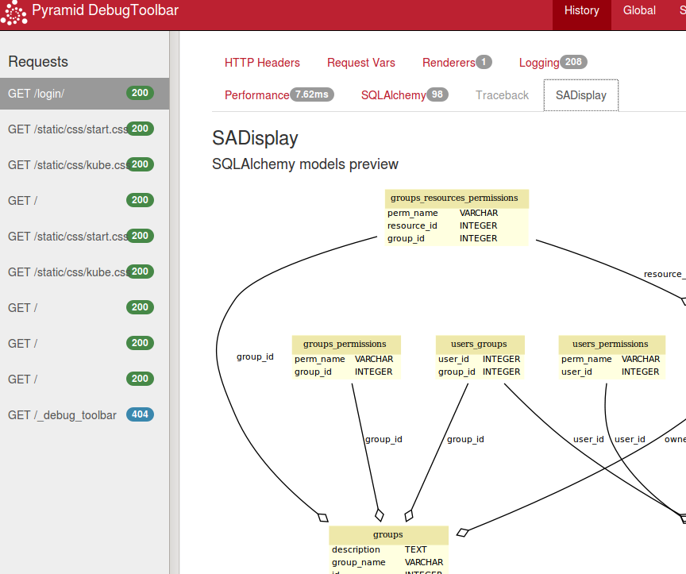

|
Feb 28, 2014
|
Я создал небольшой пример, как это сделать на примере sadisplay.
sadisplay - это модуль который отображает модели SQLAlchemy в виде
UML диаграммы.
Было бы удобно видеть схему БД проекта в дебаг панеле. Для этого создадим папку
проекта pyramid_debugtoolbar_sadisplay со структурой:
├── __init__.py
├── panel.py
└── templates
└── base.dbtmako
#! /usr/bin/env python
# -*- coding: utf-8 -*-
# vim:fenc=utf-8
#
# Copyright © 2014 uralbash <root uralbash.ru="">
#
# Distributed under terms of the MIT license.
"""
sadisplay in pyramid_debugtoolbar
"""
import pydot
import sadisplay
import sqlalchemy
from sqlalchemy import engine_from_config
from pyramid_debugtoolbar.panels import DebugPanel
_ = lambda x: x
def get_sa_base(request, settings=None):
if settings is None:
settings = request.registry.settings
engine = engine_from_config(settings, 'sqlalchemy.')
sabase = sqlalchemy.ext.declarative.declarative_base()
sabase.metadata.reflect(engine)
return sabase
class SadisplayDebugPanel(DebugPanel):
"""
debug panel
"""
name = 'SADisplay'
has_content = True
template = 'pyramid_debugtoolbar_sadisplay:templates/base.dbtmako'
def __init__(self, request):
self.request = request
self.data = {}
self.Base = get_sa_base(request)
def nav_title(self):
return _('SADisplay')
def url(self):
return ''
def title(self):
return _('SADisplay')
def render_vars(self, request):
tables = self.Base.metadata.tables.values()
desc = sadisplay.describe(tables)
dot_data = sadisplay.dot(desc)
graph = pydot.graph_from_dot_data(str(dot_data))
svg_img = graph.create_svg()
return {'svg_img': svg_img}
def content(self):
vars = self.render_vars(self.request)
return self.render(
'pyramid_debugtoolbar_sadisplay:templates/base.dbtmako',
vars, self.request)
Функция get_sa_base создает base объект и заполняет его метаданными по
строке подключения к БД, в дальнейшем мы сможем получить все модели проекта.
Метод render_vars при помощи sadisplay генерит текст формата
dot и при помощи pydot конвертит его в svg.
В версии pyramid_debugtoolbar 1.0.* нужно рендерить шаблон в методе
content. В 2.0.* метод content не нужен, шаблон указывается в виде атрибута
template, а параметры отдаются в методе render_vars. В примере
используются оба метода, что бы работало во всех версиях.
шаблон base.dbtmako:
<h4>SQLAlchemy models preview</h4>
${ svg_img|n }
link: <a href="https://github.com/uralbash/pyramid_debugtoolbar_sadisplay" style="color: blue;">pyramid_debugtoolbar_sadisplay</a>
Подключаем к приложению:
# SADisplay in pyramid_debugtoolbar
from pyramid_debugtoolbar_sadisplay.panel import SadisplayDebugPanel
config.registry.settings['debugtoolbar.panels'].append(SadisplayDebugPanel)
Результат:
 Код примера здесь: https://github.com/uralbash/pyramid_debugtoolbar_sadisplay